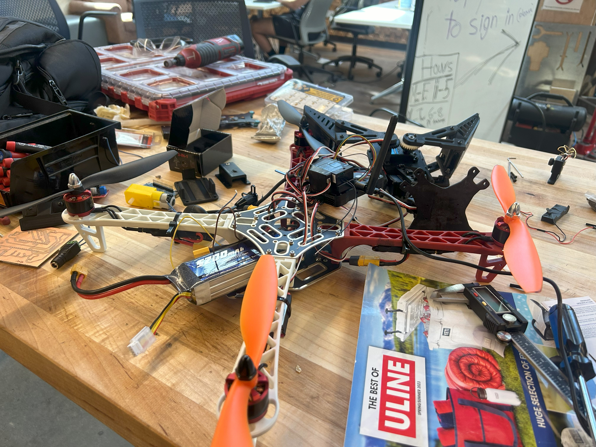
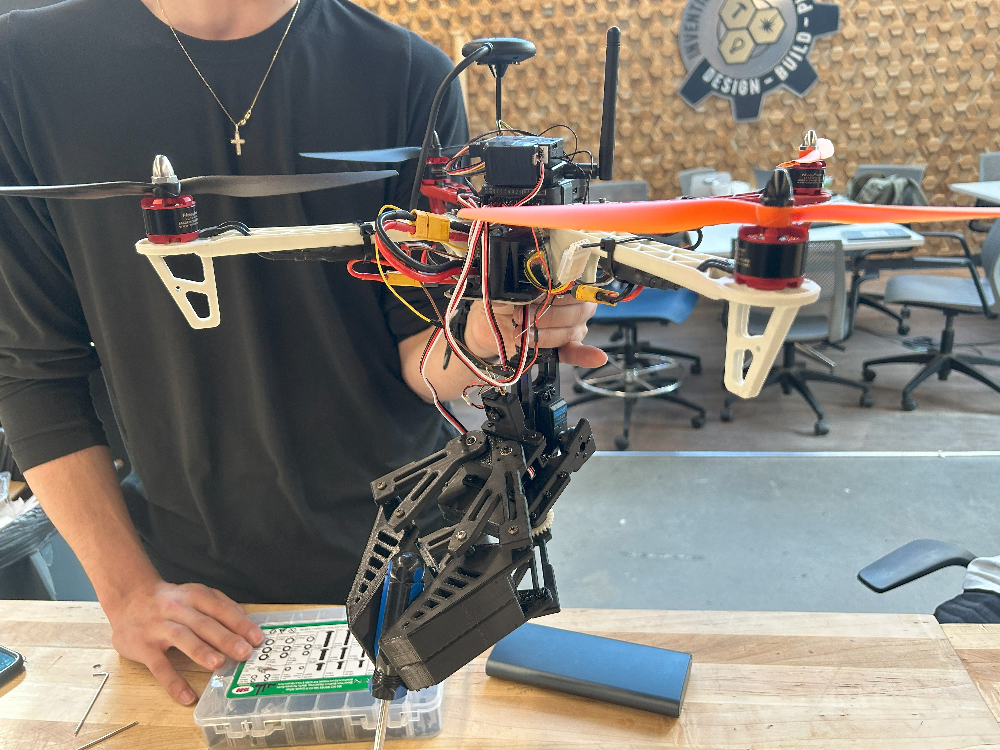
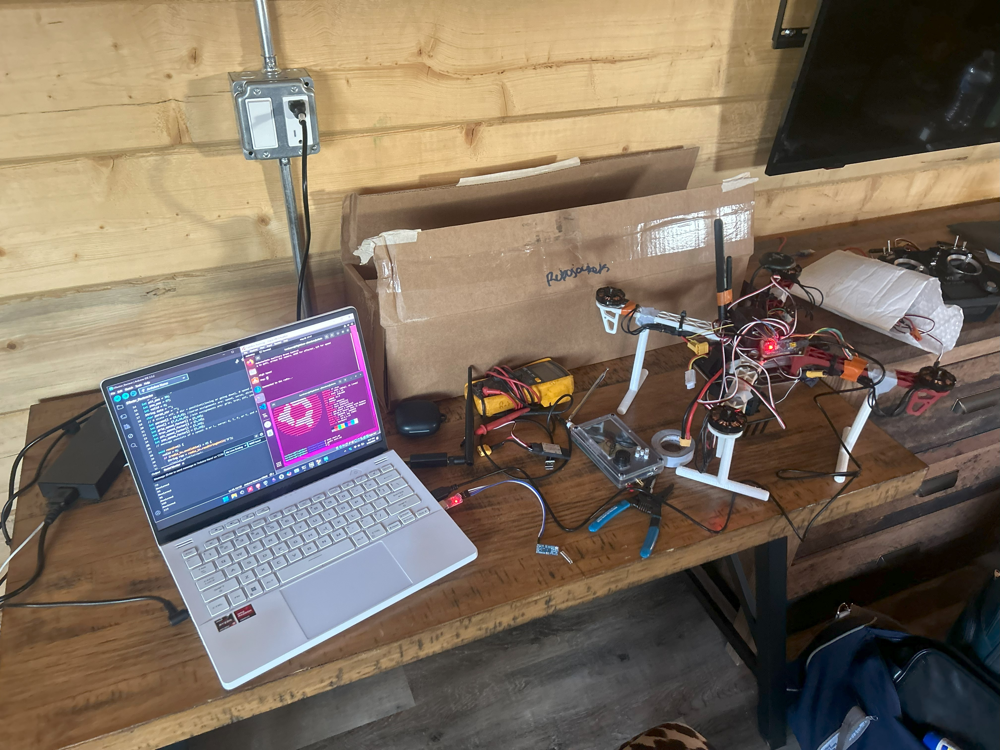

EEVI
URC 2025

As Drone Lead, I decided to overhaul our entire system, start from scratch and focus on maintaining comms since that was our point of failure last year. I rebuilt the frame using scrapped carbon fiber components from a Tarot frame, and integrating them with a custom designed and 3D printed shell. To solve the issue of operating within the HAB, I designed and built a tracking antenna that used an Intel Nuc to receive telemtery and video and relay it into the ground station. For the telemtery, I used a pair of RFD900x radios. For high quality aerial video, I decided to switch away from an analog setup and instead used OpenHD for digital transmission. The OpenHD setup used a Raspberry Pi 4, an Arducam camera, and an ASUS AC56 wifi adapter which I powered directly from the PDB.

During the competition, I plotted the given target coordinates into Mission Planner and EEVI had a successful autonomous takeoff. The drone began flying towards the target and it was very stable during its flight. Unfortunately, gps terrain data was not properly implemented and EEVI collided with a tall hill that was between the ground station and the target. In hindsight, I should have plotted a path around the hill so I wouldn't have to rely on gps elevation data, but nevertheless I was very pleased with how the drone performed. THe autonomous flight was stable, the video feed was very stable and high quality, with only around a half second of latency, and even after the crash, the only damage sustained was to the 3D printed motor mounts, and to one leg of the landing gear. All electronics were fully intact, and we were still receiving video and telemtery data after the crash. Looking forward, I want to include more distance sensor integration and rework the frame design so its lighter and easier to access.

URC 2024
I'm part of the RoboNav team of RoboJackets, a competetive robotics organization at Georgia Tech. We competed at the annual Univeristy Rover Challenge in Utah where our rover, Walli, along with the drone, Eevi, operated in simulated martian conditions to complete a series of tasks such as a science mission and an equipment servicing mission. The rover was the main priority for the team, and as such, the drone subteam consisted only of me and one other member. We were given parts from a drone that was broken and experimented with by old members and we set out to make a drone capable of assisting the rover.
 The heart of our drone was a Pixhawk flight controller running Ardupilot, something I was familiar with from previous projects. We made a classic quadcopter which allowed us to use well-developed Ardupilot PID profiles for the automatic stabilization. With the main drone hardware built out, we were faced with cost constraints and were forced to use less-than-ideal camera and telemetry hardware, which would present issues later on. Additionally, we wanted to integrate an end effector on the bottom of the frame that would allow us to pick up and transport some hand-tools, allowing the rover to focus on the larger tasks. While my teammate made the mechanical design for the end effector, I handled the electrical and software integration into the drone architecture. We ran into some issues supplying the necessary voltage from the Pixhawk to the end effector servos, which I decided to bypass by using a custom PCB I designed for a different project that used a seperate microcontroller to supply power and PWM to the servos.
Shortly before competition, we realized the range of our telemetry and analog radios were more limited than we initially thought. As a result, I decided that the best way to proceed would be to mount the telemetry and analog reciever on the rover itself, and relay the incoming data through its more reliable communication hardware. In this setup, the range of the drone would be localized to the operational location of the rover itself, which was much better than being tethered to the base station. Unfortunately, at competition we encountered a faulty wire connection, which prevented us from receiving video and thus from using the drone for the delivery task. We were definitely disappointed that we couldn't compete the way we wanted, but we were still proud of the work we were able to complete, and everything we learned along the way. We have a great plan going forward for version 2, and are excited to return to URC next year.